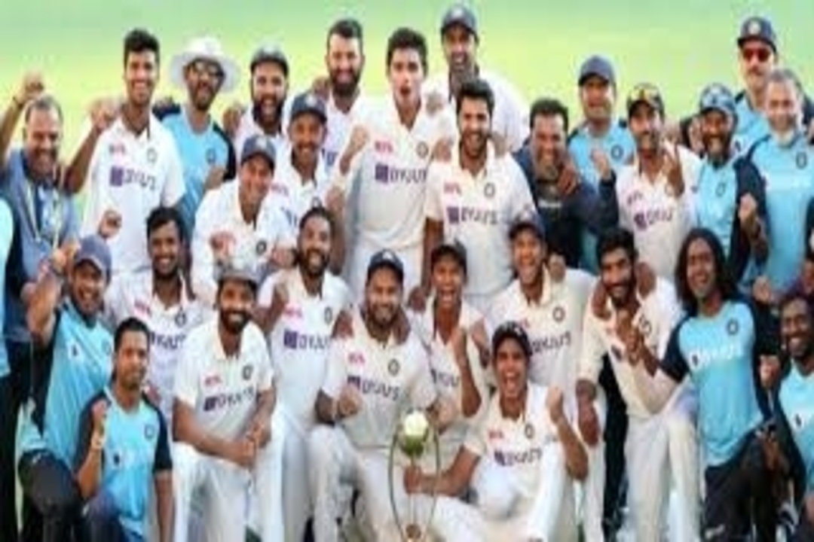

4 key-lessons to learn from the series Down Under

How often does one learn such impactful and life-enriching lessons from a single sporting event as we did from the recently concluded India-Australia test series? I often believe sports teach you a lot in a short period of time and there are a lot of parallels you can draw from a game which can become one of the greatest lessons learned. There has been a lot of remarkable close-knit nail-biting triumphs in the past but this one stands out in its own special way. The Indian team was bruised, battered, and depleted in every possible way, right from the physical injuries and racist abuses to reaching one of their embarrassing performances. Every time they just refused to bow down and stood upright in the face of adversity. The victory was far more improbable than the script-writers could ever conjure. I would like to outline 5 key takeaways one shouldn’t miss drawing from this test-series:
Grit & Determination: While this trait is normally seen in sportspersons across the globe, the exceptional display of resilience, courage & unflinching attitude shown by the not-so-experienced side was unprecedented and unparalleled. The unshakeable obduracy shown by the team exemplifies how one if stays on purpose can achieve great heights which earlier might seem like an uphill task. Never before had someone thought that the Indian team would emerge victorious, especially after the loss it suffered in the first match? Their never-say-die attitude manifested in their efforts which helped them achieve the results which they had initially set out to.
Marshaling young troops: Leadership was not an easy task here. Picking up the baton at the lowest point asks for having all it takes to be a great leader. Calm and composed, not ruffled by anything, the skipper ensured creating the right environment within the team by not carrying any sort of past baggage. As a protagonist, he led from the front in the second test providing that platform of optimism and a glimmer of hope which triggered the team to produce other stellar performances. He let the team to bank on their individual strengths while ensuring they play as a team and each one pitched-in at different times to pull it off as a team. He believed in his team and instilled that self-belief in them without letting themselves dragged into the past.
Believing in yourself: It was a roller-coaster ride throughout the series. In their first test, they had plumbed the depths of the lowest test total ever. There was a sense of pessimism and gloom all around: - expert opinions not favorable, Star players leaving the Indian camp, half the team having almost no experience playing in those conditions and so there wasn’t even an ounce of hope left behind. Bouncing back from that drubbing was never easy and the only thing that could have saved them was to have a tremendous self-belief by keeping their past records, numbers & statistics behind and continue doing the due diligence. The team believed in their skills and talents throughout by keeping up their unflagging enthusiasm to pull off this historic and dramatic win.
No resting on your laurels: Long term consistency beats short-term intensity. It is a crime these days to put your guard down and relax, even though you are at the top. It is important to expect uncertainty and improbability which can even go to the contrary of the most logical and well-thought predicted outcome. You are expected to stay on your toes, facing and even fighting every situation with no complacency. This was manifested in the way the Australian side and their pundits conducted themselves with their statements after their first victory. ”Staying on the course forever” is the order of the day.
The enormity of the achievement stems from the fact that the team won the series despite all odds. No-one could have ever anticipated odds to such degree before this tour: Key players getting injured, scoring its lowest total, racist chants, and a relatively new skipper. Playing with the only possible XI against the world-class unit in the decider test proved many wrongs who dared to predict the outcome of the match.
Adversity poses questions. It tests your character and gnaws at your self-belief. A lot of character was shown by the team on the field and there was a display of a mix of perseverance, patience, and freneticism that held them up to achieve this remarkable feat and stand towards glory.
I want to conclude with one of the quotes by Mr. Nick Saban:
One thing about championship teams is that they’re resilient. No matter what is thrown at them, no matter how deep the hole, they find a way to bounce back and overcome adversity.
Thanks a lot for reading and feel free to comment.